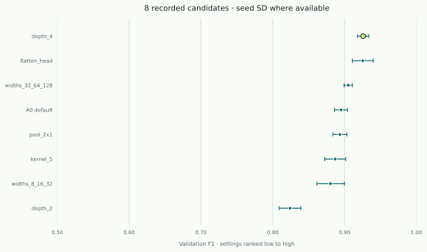
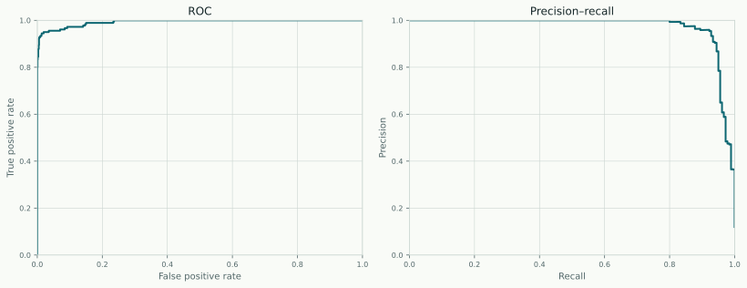
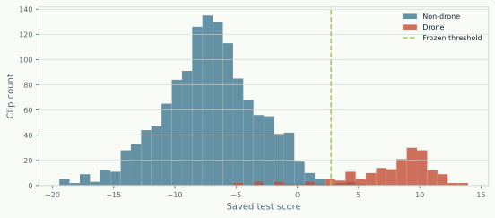
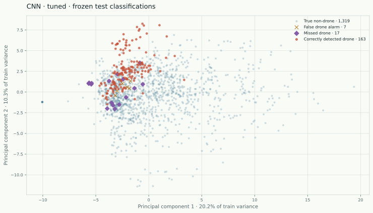

DECISION BEHAVIOR
Move the threshold
This reclassifies only the anonymous saved test scores.
Convolutional network · frozen designated fit · seed 44
Frozen Stage C depth_4 winner: 16–32–64–64 channels, 60,641 parameters; test-scored seed 44 and validation-frozen threshold shown. Stage D validation retrains are separate.
Validation search · 8 recorded candidates
Chart form follows the recorded search: parameter maps for complete grids, response curves for ordered sweeps, and ranked dot plots when settings vary across several dimensions. The held-out test did not choose these settings.

| Rank | Recorded setting | Mean validation F1 | Seed SD | Seeds |
|---|---|---|---|---|
| 01 | depth_4 | 0.9260 | 0.0080 | 3 |
| 02 | flatten_head | 0.9255 | 0.0147 | 3 |
| 03 | widths_32_64_128 | 0.9052 | 0.0058 | 3 |
| 04 | A0 default | 0.8951 | 0.0092 | 3 |
| 05 | pool_2x1 | 0.8935 | 0.0098 | 3 |
| 06 | kernel_5 | 0.8871 | 0.0146 | 3 |
| 07 | widths_8_16_32 | 0.8806 | 0.0193 | 3 |
| 08 | depth_2 | 0.8239 | 0.0152 | 3 |
Frozen test scores · 1,506 clips
The curve is derived from the saved score vector. The confusion matrix starts at the validation-frozen threshold.

This reclassifies only the anonymous saved test scores.
Blue: non-drone · coral: drone

Frozen test classification · threshold 2.7515
Colors and symbols combine the known test label with this model’s saved prediction. The operating threshold was selected on validation.

Matched group comparisons
Intervals crossing zero do not establish a difference or equivalence. Positive values favor this model.
| Compared model | Difference direction | 95% paired CI | Read |
|---|---|---|---|
| Multilayer perceptron | CNN · tuned − Multilayer perceptron (reversed pair) | [+0.032, +0.178] | excludes zero |
| SVM · RBF | CNN · tuned − SVM · RBF | [+0.009, +0.137] | excludes zero |
| Random forest | CNN · tuned − Random forest | [+0.033, +0.186] | excludes zero |
| CNN · clean control | CNN · tuned − CNN · clean control | [-0.003, +0.025] | crosses zero |
Compute and lineage